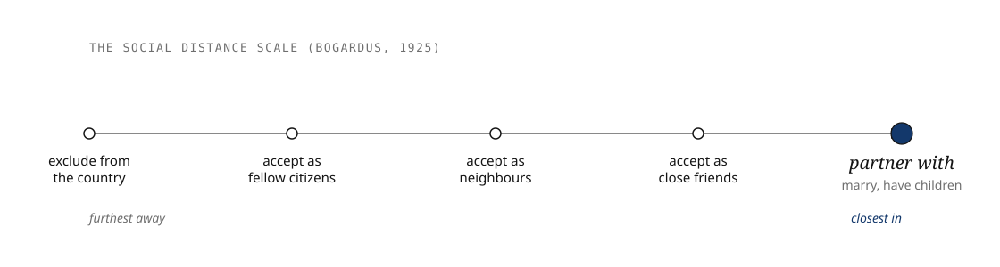
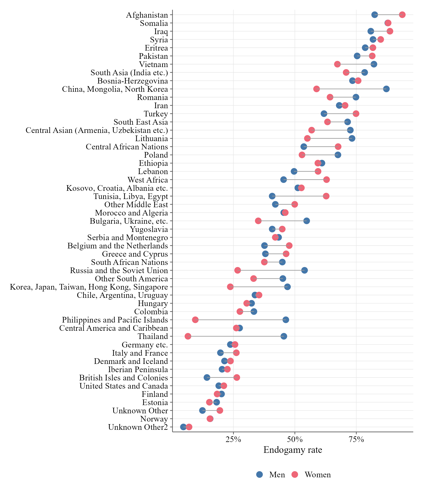
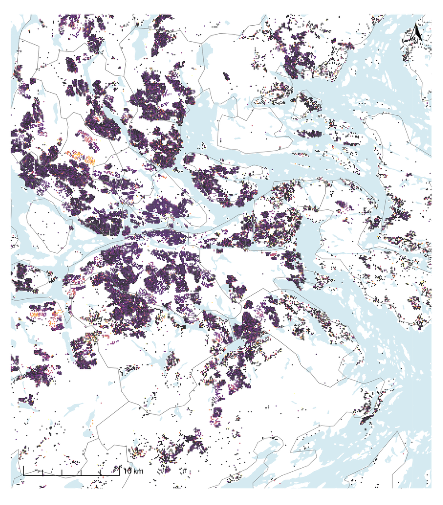
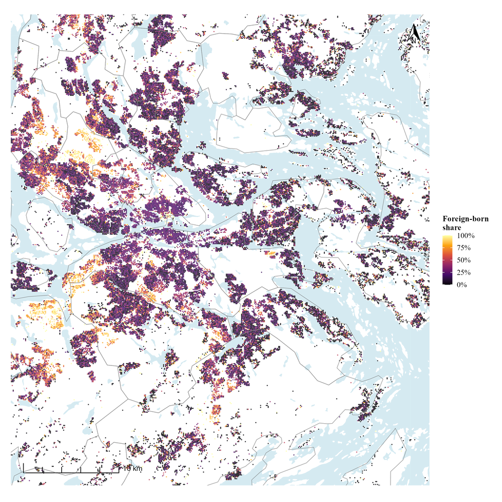
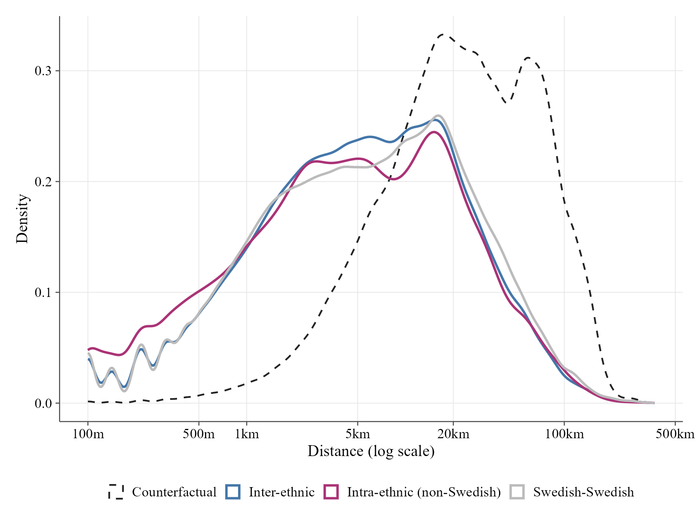
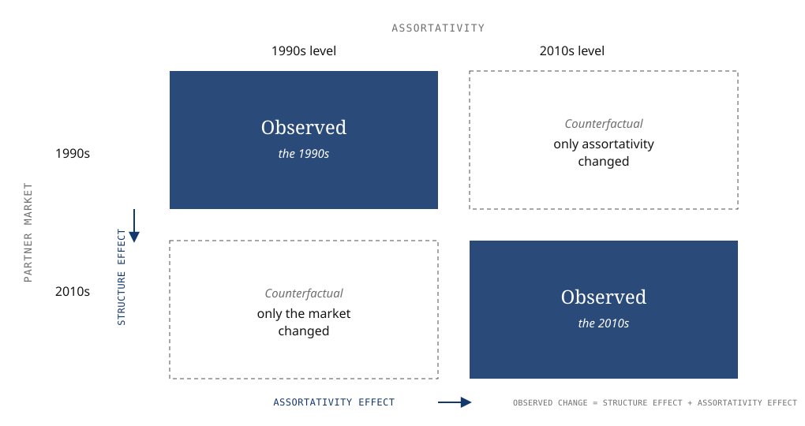

Cadastral title
LinCSS Symposium · 19 May 2026 · Linköping
Ethnic boundaries and partner choice in Sweden
Ethnic assortative mating, the partner market, and thirty years of change
Jesper Lindmarker — Institute for Analytical Sociology
Please go here to test your hypothesis
Link to the interactive visualisations
Are Swedes more open?
Haven’t voted yet? Scan here.
Over the last 30 years, contact between immigrants and Swedes has increased.
On average, do you think Swedes are more ,or less, open to partnering with immigrants now than they were then?
Social distance

Measured across a whole population, one can see it as the structure of social boundaries.
Two trends, 1991 to 2019

RQ: How much of the change in partnering is attributable to structure, and how much to changing boundaries?
Simulation: Decomposing partnering trends
Two mechanisms
Structure Who is available to partner with: group sizes, age, and where people live.
Assortativity the tendency to partner within group, estimated net of structure.
How much is structure?

These group difference are not self-explanatory. They are the product of both structure and assortativity.
Structure is spatial


Partner choice is spatial

The median couple in Sweden lives about 6km(!) apart the year before they began cohabiting.
Simulation: Propinquity as a mechanism
METHOD
Measuring the boundary
Register data is wild
Sweden has one of the most complete population records anywhere, reaching back to the church parish registers in the 1600s.
- Every resident has a personal identity number.
- The number is recorded wherever a person appears: birth, school, employment, income, medical care, housing, family ties.
- The registers link all of it. Residence is recorded to a 100-metre square.
- Accessed through a secure server at statistics Sweden, with strict confidentiality rules.
Not a survey: no questionnaire, no recall error.
The estimation sample
Identifying a union. Starting from couples who married or had a child together, residential histories are traced back to the first shared address.
Ancestry here is country of birth, not self-identified identity.
Conditional logit
Union formation is modelled as a discrete choice of partner.
P(y_i = j \mid \mathbf{x}_i) = \frac{\exp(\textcolor{#13386B}{\beta}^\top \mathbf{x}_{ij})}{\sum_{k \in \textcolor{#13386B}{C_i}}\, \exp(\textcolor{#13386B}{\beta}^\top \mathbf{x}_{ik})}
C_iThe choice set: every single available in that county and year. The partner market sits inside the model.
\betaWhat is left once that market is conditioned out.
So β estimates assortativity as we observe it: the within-group tendency, net of who was available.
The decomposition
From the fitted model we can predict: apply its estimates back to the data and calculate partnering rates.

RESULTS
What I find
Result: Swedish endogamy
Result: Swedes - immigrants by generation
Result: Swedes - immigrants by origin region
Implications for assimilation theory
Straight-line assimilation expects ethnic boundaries to blur as groups converge: intermarriage rises because the boundary itself weakens (Gordon; Alba and Nee).
- What we find instead. Net of the partner market, the assortativity component did not soften, and for several origin groups it hardened.
- This is the tension with the theory. The rise in intermarriage is real, but structural: a diversifying market. The boundary itself, the thing assimilation predicts should weaken, did not.
- And a group is not a fixed population. Iranian-origin Swedes in 1990 are not the same people as in 2019. Continued arrival keeps refilling the first generation, so a repeated cross-section can mask assimilation happening within cohorts.
What is in each component
Structure is what the model conditions on:
- the single population in that county and year
- group sizes
- age-eligibility
- residential distance
Assortativity is the residual left over:
- a genuine tendency to partner within group
- the other side’s reciprocal acceptance
- norms and third-party influence
- structure the model did not measure, and meeting contexts it cannot see (online dating)
A residual collects everything not modelled. That is why we report it as assortativity, not preference.
The opening question
What the room predicted at the start.
You were asked whether Swedes have become more or less open.
- Swedes do partner across ethnic lines more often now.
- But the decomposition attributes almost all of it to structure: the partner market became more diverse.
- Net of the market, the assortativity component did not soften.
We mix more, but mostly because the market changed, not because openness did.